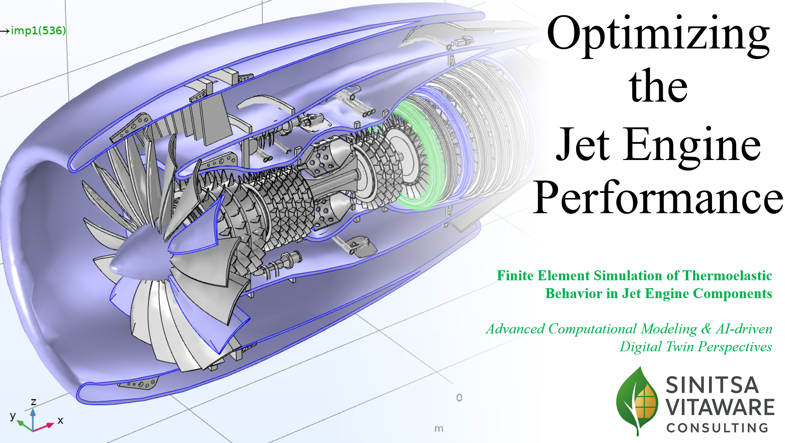

Thermoelastic Turbine Optimization
#FEM #Multiphysics #DigitalTwin
Challenge
Predicting failure risks in turbine blades under extreme thermal loads (10k+ RPM) where physical testing is cost-prohibitive.
Solution
Developed a coupled thermal-structural FEM model with adaptive meshing (~1M DoF) to simulate stress distributions.
Impact
Achieved convergence in <10 minutes. Enabled preventive design changes, reducing prototype cycles by 40%.